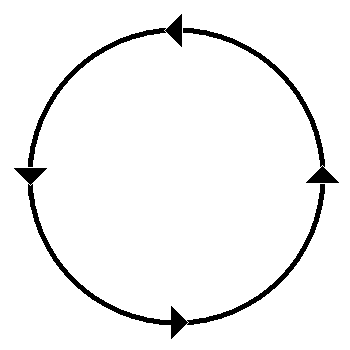
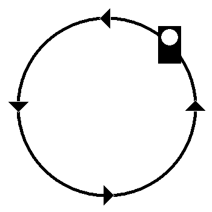

(1) Bedeutung
Rangierhalt.
Signalbuch-Online
Signal Ra 5
Rangierhalt – Bedeutung, akustische und optische Ausführung des Signals.
(2) Beschreibung
Mit der Mundpfeife oder dem Horn:
Drei kurze Töne schnell nacheinander.
und mit dem Arm:
Tageszeichen:
Kreisförmige Bewegung des Arms.
Nachtzeichen:
Kreisförmige Bewegung der Handlaterne.


(3)
Das Signal gilt bereits, wenn es nur hörbar oder sichtbar aufgenommen wird.